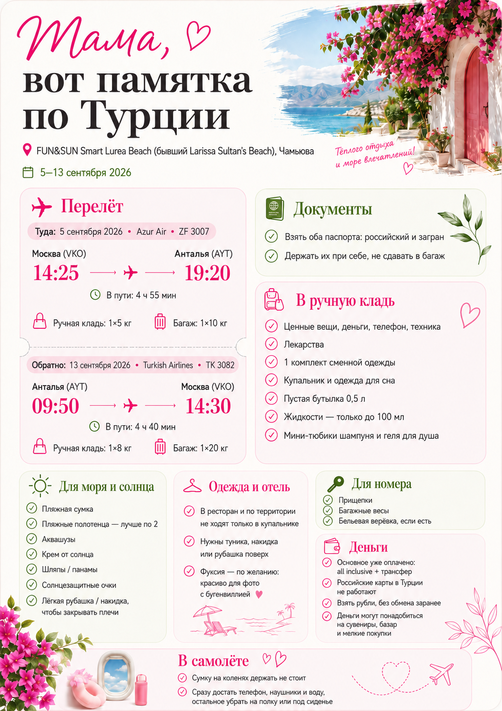

Свои нужны обязательно. В отеле полотенца выдают через спа-центр, а мы любим уходить на море раньше, чем он открывается. Плюс в прошлые поездки отельные полотенца были уже довольно уставшие.
Лучше больше одного: одно для моря, другое для бассейна / на замену. Если вес критичен — лучше тонкие быстросохнущие, а не тяжёлые махровые.
Водонепроницаемые чехлы уже куплены и лежат у тебя. Не забудь положить их в чемодан.
Надувной круг + насос уже куплены и лежат у тебя. Возьми их с собой, чтобы в воде было спокойнее.
В ресторан на завтрак, обед и ужин и вообще в общие зоны не идём в одном купальнике. Нужна вещь, которую легко накинуть сверху: туника, пляжное платье, лёгкая рубашка, шорты + футболка.
Лучше, чтобы такая вещь была лёгкой, дышащей и нормально переживала мокрый купальник.
Совсем не обязательный пункт, но очень удачный для фотографий. Вокруг отеля в августе и сентябре цветёт ярко-розовая бугенвиллия.
Если захочется купить платье, рубашку или футболку — фуксия будет отлично смотреться на таком фоне.
Она точно понадобится. Её можно использовать и как ручную кладь, если она укладывается в требования по весу и удобно закрывается.
Полезна на месте: телефон, ключ-карта от номера, немного денег — и можно идти на ужин или прогулку без большой пляжной сумки.
У нас all inclusive — перелёт, проживание, питание и трансфер уже оплачены.
Если всё-таки хочешь взять наличные, то бери рубли — в туристических местах их принимают.
Хотя с обменом в Чамьюве сложно, заранее менять на лиры или доллары смысла не вижу, потому что наличные могут и не понадобиться. Если что, смиримся с неидеальным курсом.
Бельевая верёвка. На балконе может не оказаться удобной сушилки/верёвки. С прищепками будет проще сушить купальники и лёгкую одежду.
Можно отмечать прямо в браузере. Состояние сохранится на этом устройстве.
Самое важное на одной картинке. Можно сохранить её в телефон или сделать скриншот.

{kind=link}